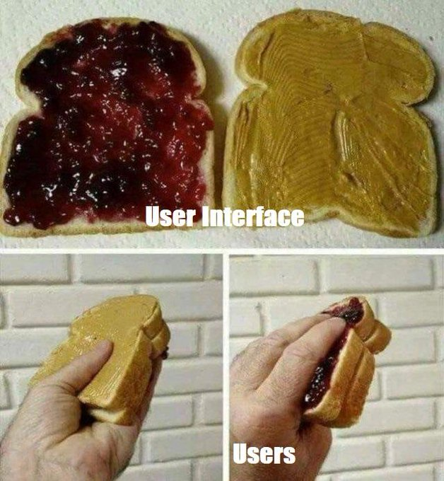
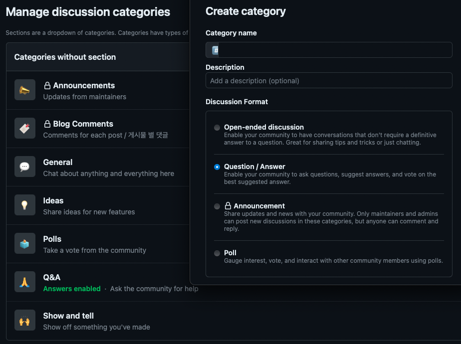

요약
앞으로 가감없는 피드백 환영합니다.
https://github.com/kkumtree/blog.minseong.xyz/commit/e17822e72e8d357dcdbda1025c5372161a7b93ff
배경
gh-pages로 블로그를 구축해서, 첫 게시물을 올린 지 만 4개월이 지났다.
구축기는 나중에 올려야지.
급히 벤치마킹해서 올린거라, 부족한 점은 많지만 가장 중요한 댓글 기능이 없어서 아쉬웠다.
원래는 댓글을 달지 않으려고 했는데,
- 부족한 부분에 대해서 조언도 받아보고 싶고
- 추가로 궁금한 점이나 이해가 안되는 부분에 대해서 피드백도 받고 싶었다.
다른 블로그에서 답을 찾으려고 검색엔진을 돌리면, 뭔가 2% 부족하거나 / 내가 원하는 해답이 아니거나 / 매번 이모티콘으로 끝나는 특유의 허탈감으로 짜증이 밀려와서 번역기 돌려가며 국외 포스트나 문서를 보다보니, 반대로 내 글도 큰 도움이 되지 못할 경우도 있겠다 싶었다. 그래서 댓글 기능을 추가하기로 했다.
giscus 선정
사실은 disqus를 사용하려고 했다. 아는 것 중 유명한게 그거 밖에 없었다. 그러다가 원래 벤치마킹하고 있던 한영빈님 블로그를 살펴보니 giscus를 사용하고 있었고, 뭔가 해서 공식홈페이지를 살펴보았다.
소스코드 보기 전에 이미 disqus 계정 생성했는데, 가입 이후 안들어가게 되었다.
- GitHub repo에서 제공하는 Discussions으로 댓글 기능을 구현한다.
- GitHub 의존성은 있지만, 어차피 gh-pages로 운영 중이라 일관성이 있다.
- 작성을 위한 로그인은 GitHub OAuth로 이루어진다.
예전에 inflearn에서 facebook 소셜로그인 오류난 거가 생각나서,
OAuth는 안정적이어야 한다고 생각한다. Meta OAuth는 지양하고 있다.
(줔아저씨가 ibus 다국어 입력도 좀 받아줬으면 한다. 트래커 얼마나 다신거야.) - 임베딩이 엄청 쉽다. 눈대중으로 정상 구동 될 정도라니,
gh-pages에 vanila-framwork 테마 입힐 때를 생각하면 감격 수준이다. - 비밀 댓글이 없다. 개인적 취향인데, 비밀 댓글로 보낼 일이면 이메일이나 다른 연락수단을 취하면 될 일이 아닌가 싶다.
giscus 적용 시 유의할 점
- repoID 및 categoryID:
Docs 관련 항상 전해지는 글귀가 있다. RTFM… 이라고. 처음에는 이걸 어떻게 획득하는 거지? 이러고 있다가, 공식홈페이지에 이것저것 입력해보니 키값이 나왔다. 너무나도 짧은 quick start 가이드라서 설?마하고 안 읽었는데 역시나였다. 그냥 하라는 대로 하자.
 - 당연히, 기존의 페이지 구조를 이해하고 있어야 한다. 프레임워크를 제외한, 커스텀된 부분마저도 나처럼 다른 블로그를 벤치마킹했다면 기존의 페이지 구조를 파악해야 한다.
- 국외 블로그만 참고하고, 무지성으로 layouts/_default/single.html에 넣었다가 헛발질을 했다.
- 처음에 어떻게 Hugo 구성했었는지 잊고지내서, 바로 layouts/post/single.html쪽을 바라보게 했다는 것을 인지하는데 시간이 걸렸다.
적용순서
- 추천: 공식홈페이지의 quick start를 따라하자.
- GitHub discussion 활성화:
GitHub repo는 기본적으로 discussion이 열려있지 않다.
Settings > General > Features > Discussions을 활성화한다. - giscus 앱 설치(Github Apps):
나중에 부연설명을 해야될 것 같기도 한데, 이 부분은 다른 분들이 잘 기술해주셔서 크게 곤란해질 일은 없다. 앱을 설치할 때, 권한 부여를 계정 전역으로 할지, repo별로 할지 선택할 수 있다. 블로그 repo에만 권한을 주었다.- 퍼미션은 Read access to metadata / Read and write access to discussions 두 가지다. (CR
UD)
- 퍼미션은 Read access to metadata / Read and write access to discussions 두 가지다. (CR
- discussion category format 설정:
공식홈페이지에서는 두리뭉술하게 GitHub Docs만 게시했는데 2가지 길이 있다.
- Announcement 속성: maintainer만 관리할 수 있다.
Discussion에 대한 직접적인 CRUD가 giscus 앱을 포함한 maintainer만 가능하다. (블로그 페이지에서 작성자가 게시 -> giscus app이 직접 repo의 Discussion 게시 -> repo에서 수정/삭제는 maintainer만 가능) - 나머지 속성들은 그렇지 않다.
테스트 해보고 아니다 싶으면 다른 카테고리를 바라보게 하면 된다. 
- Announcement 속성: maintainer만 관리할 수 있다.
- config 임베딩: 당연히 YAML과 TOML 방식이 다르다.
하지만 단순해서 만들어진 bolierplate를 참조하면 손을 좀만 보면 된다. 처음 구축할 때, 시인성으로 TOML 을 적용했기에 다른 코드 참조하면서 환경변수 및 스크립트 임베딩을하면 된다. - giscus 임베딩: 구조에 맞춰 알맞게 넣고, CSS가 잘 적용되는지 조정하면 완료

kkumtree
Source code on GitHub
© 2025 kkumtree and contributors All rights reserved.
Licensed under
CC BY-NC-ND 4.0